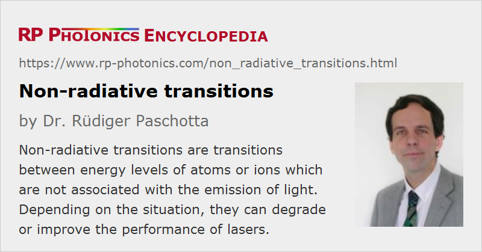

Non-radiative Transitions
Definition: transitions between energy levels of atoms or ions which are not associated with the emission of light
Opposite term: radiative transitions
German: nichtstrahlende Übergänge
Category: physical foundations
How to cite the article; suggest additional literature
Author: Dr. Rüdiger Paschotta
Atoms and ions, such as laser-active ion in laser gain media, have various excited energy levels. Transitions of such atoms and ions to lower-lying levels are often associated with the emission of photons (light). The generated photons carry with them the difference of energy between the involved energy levels. However, there are also mechanisms which allow for non-radiative transitions (or nonradiative or radiationless transitions), i.e., transitions not involving light. The excess energy is then dissipated in some other way – in most cases, in the form of phonons, which are associated with lattice vibrations of a solid. In liquids, similar phenomena can occur, but hardly in gases, where the atoms or molecules are not in contact with others for most of the time and therefore hardly have a chance to dissipate excitation energy non-radiatively.
Phonon emission is a very rapid process in solids in cases where the transition energy is smaller than the energy of some of the phonons of the lattice. The radiative transition is then effectively bypassed and cannot be observed. For larger transition energies, only multi-phonon transitions are possible, where one transition involves the emission of multiple phonons. The rate of such processes becomes rather small when more than about three phonons need to be emitted.
There are also quenching processes related to impurities or lattice defects, which have additional electronic levels to which excitation energy can be transferred. Such impurities or defects may affect only those ions which are sufficiently close to them, unless the laser ions are sufficiently close to each other to facilitate rapid energy transfer between them.
Nonradiative transitions tend to decrease the upper-state lifetime of laser gain media and thus to decrease (quench) the upper-level population, unless the nonradiative transition rates are negligible compared with the radiative ones. In that way, the gain efficiency (for continuous pumping) is reduced by non-radiative decay, also possibly the maximum achievable laser gain.
Note that nonradiative transitions are essential for the function of many solid-state laser gain media: they often facilitate the population of the upper laser level, if pumping occurs to a higher-lying level, and they also often help to depopulate the lower laser level and thus to avoid reabsorption losses.
Questions and Comments from Users
Here you can submit questions and comments. As far as they get accepted by the author, they will appear above this paragraph together with the author’s answer. The author will decide on acceptance based on certain criteria. Essentially, the issue must be of sufficiently broad interest.
Please do not enter personal data here; we would otherwise delete it soon. (See also our privacy declaration.) If you wish to receive personal feedback or consultancy from the author, please contact him e.g. via e-mail.
By submitting the information, you give your consent to the potential publication of your inputs on our website according to our rules. (If you later retract your consent, we will delete those inputs.) As your inputs are first reviewed by the author, they may be published with some delay.
Bibliography
| [1] | Z. Burshtein, “Radiative, nonradiative, and mixed-decay transitions of rare-earth ions in dielectric media”, Opt. Eng. 49, 091005 (2010), doi:10.1117/1.3483907 |
See also: multi-phonon transitions, quenching, upper-state lifetime, gain media
and other articles in the category physical foundations
|  |
If you like this page, please share the link with your friends and colleagues, e.g. via social media:
These sharing buttons are implemented in a privacy-friendly way!